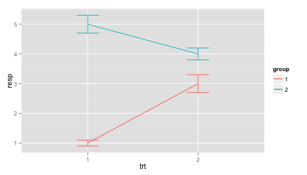

Using R for Data Wrangling, Analysis, and Visualization
Lecture 3: Last things about data structures, starting some graphics
Dr. Yphtach Lelkes
How was the problem set?
Today
- Lists
- Starting with graphs
- You'll need to follow along on the slides posted here: https://github.com/ylelkes/R_wav
Various functions you perform on the entire dataset (or subsets)
- colSums(), rowSums(), colMeans(), rowMeans()
- Use the USArrests dataset in the datasets package data(datasets::USArrests).
- What was the total # of violent crimes by state?
- What was the average number of each violent crime across all states?
- For states where more than 70 percent of the population lives in cities, what is the average number of attacks, by crime?
- What was the total # of violent crimes by state?
head(rowSums(USArrests[,c(1,2,4)]))
## Alabama Alaska Arizona Arkansas California Colorado
## 270.4 317.5 333.1 218.3 325.6 250.6
- What was the average number of each violent crime across all states?
colMeans(USArrests[,c(1,2,4)])
## Murder Assault Rape
## 7.788 170.760 21.232
- For states where more than 70 percent of the population lives in cities, what is the average number of attacks, by crime?
colMeans(subset(USArrests,USArrests$UrbanPop>70)[,c(1,2,4)])
## Murder Assault Rape
## 7.863158 194.052632 24.989474
Lists
- A list is a type of object that can hold any other object
newlist <- list(mtcars,letters,6) newlist[[2]] - Index or subset within a list
newlist[[1]][,6] - Will become much more useful down the road.
Try the following:
- Run the following code:
listexample <- list(experiment1=data.frame(condition=c("Control","Treat"),score=rnorm(100)), experiment2=data.frame(condition=c("Control","Treat"),score=rnorm(100)), experiment3=data.frame(condition=c("Control","Treat"),score=rnorm(100)))- Generate the mean score for Treatment and Control for each dataset
- When you're done try the following:
lapply(listexample,function(x)c(Treatment=mean(subset(x,condition=="Treat")$score), Control=mean(subset(x,condition=="Control")$score)))
R base graphics
hist(mtcars$mpg)
plot(mtcars$mpg~mtcars$hp)
boxplot(mtcars$mpg,mtcars$cyl)
R base graphics
- Generally ugly
- Enter Hadley Wickham

- ggplot2: The grammar of graphics
- Easy to start with, but you can end up with complex figures.
- Today will do part 1. In a few weeks we'll do part 2.
ggplot2
install.packages(ggplot2)
Every ggplot2 object has three components
data,
A set of aesthetic mappings between variables in the data and visual properties, and
At least one geom, geometric object (or later), which describes how to render each observation.
library(ggplot2)
ggplot(mpg, aes(x = displ, y = hwy)) +geom_point()
Exercises (1)
- What is this showing?
ggplot(mpg, aes(model, manufacturer)) + geom_point() Can you make it more informative?
Describe the data, aesthetic mappings and layers used for each of the following plots. See if you can predict what the plot will look like before running the code.
ggplot(mpg, aes(cty, hwy)) + geom_point()
ggplot(diamonds, aes(carat, price)) + geom_point()
ggplot(economics, aes(date, unemploy)) + geom_line()
ggplot(mpg, aes(cty)) + geom_histogram()
Aesthetics
aes(displ, hwy, colour = class)
aes(displ, hwy, shape = drv)
aes(displ, hwy, size = cyl)
ggplot(mpg, aes(displ, cty)) +
geom_point()
ggplot(mpg, aes(displ, cty, colour = class)) +
geom_point()
ggplot(mpg, aes(displ, cty)) + geom_point(color="blue")
Exercises
Experiment with the colour, shape and size aesthetics. What happens when you map them to continuous values? What about categorical values?
What happens when you use more than one aesthetic in a plot?
What happens if you map a continuous variable to shape? Why? What happens if you map trans to shape? Why?
## Plot the graphs found in part 1, found here:
- If you finish early, start exploring ggplot--change the x-axis, rotate labels, label scales, change the x-y limits, check out themes (e.g., theme_bw)
Saving your graphs
ggsave(filename="x.pdf",width=8,height=8)
ggsave(filename="x.png",width=8,height=8)
etc
Facetting :Tables of graphics
library(ggplot2)
ggplot(mpg, aes(displ, hwy)) + geom_point() +facet_wrap(~class)

Facetting
Make the graphs found in Part 2. Hint, need a different facet function for the second graph
Plotting errors
- In most plots, we want to display uncertainty
- Here need to display a xmin and xmax OR a ymin and a ymax within the geom

- Work on part 3 in the graphs section.
Building a plot layer by layer
p <- ggplot(as.data.frame(state.x77), aes(Illiteracy, Murder))
p
r <- p+geom_point()
r
j <- r+geom_smooth(method="lm")
j
j+geom_text(aes(label=rownames(as.data.frame(state.x77))))
Annotate your graphics
library(devtools)
source_gist("524eade46135f6348140")
library(ggplot2)
ggplot(data = as.data.frame(state.x77), aes(x = Illiteracy, y = Murder, label=Murder)) +
stat_smooth_func(geom="text",method="lm",hjust=0,parse=TRUE) +
geom_smooth(method="lm",se=FALSE) +
geom_point()
Lots more customization available
- Learn about colour brewer scale_colour_brewer and
- Learn about ggthemr